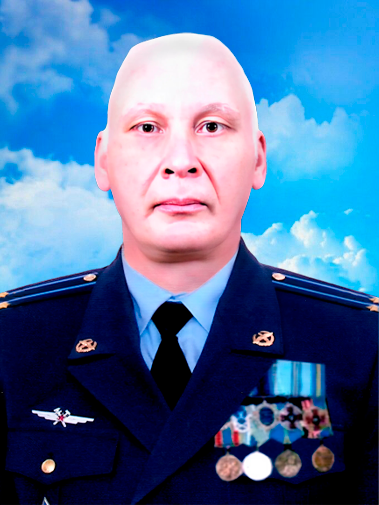

Я єсть Народ, якого Правди сила ніким звойована ще не була

(15.09.1970 – 04.01.2025 рр.)
Народився 15 вересня 1970 року в селі Ряснопіль Березівського району. Через рік родина переїхала до Березівки, де він навчався у середній школі №2. Батько Олександра був офіцером і мріяв, щоб син став архітектором, але сам Олександр обрав шлях військового.
У 1987 році закінчив школу й одразу вступив до Полтавського вищого зенітного ракетного командного училища. У 1991 році завершив навчання і за розпорядженням 78‑ї танкової дивізії був направлений до Туркестанського військового округу, де служив на полігоні до 1993 року.
Того ж року повернувся на Батьківщину й почав службу в Миколаївській області на військовому авіаційному полігоні. Тут отримав звання майора та посаду начальника штабу. У цей час одружився, а в 1999 році народилася донька.
З 2001 року служив у Центральному оперативному відділі як викладач. У 2008 році закінчив Академію оперативного управління в Києві та отримав звання підполковника.
У 2011 році був переведений до штабу Повітряних сил у Вінниці, після чого пішов на заслужений відпочинок. З початком АТО прагнув повернутися до служби, і в 2017 році розпочав роботу в Оперативному управлінні штабу командування «Південь» на посаді начальника відділу безпеки. Брав участь у бойових діях у Донецьку.
У 2020 році отримав посвідчення учасника бойових дій, а в 2021 році — статус ветерана військової служби.
Військова служба в зоні АТО позначилася на його здоров’ї. У 2022 році він прагнув повернутися на фронт, адже мав великий досвід і бажання бути корисним. Проте хворобливий стан погіршувався, і 4 січня 2025 року його серце зупинилося назавжди.
У нього залишилися батько Анатолій Іванович та донька Альбіна.
Похований із військовими почестями на Алеї Слави в Березівці.